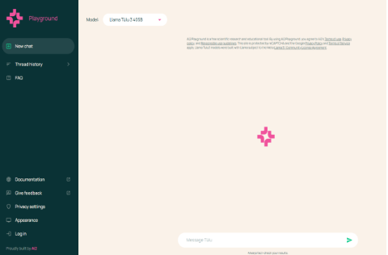

Veille Technologique
Les dernières tendances en technologie et innovation de l'IA
Dans cette section, je vous partage des informations sur les dernières tendances, innovations et découvertes technologiques. Voici quelques sujets que j'ai explorés récemment :

- L'apparition de DeepSeek R1 a eu pour effet de provoquer une chute majeure des valeurs technologiques américaines - moins de 3 % - le 27 janvier 2025. DeepSeek a été fondé en 2023 par Liang Wenfeng, à Hangzhou. Wenfeng aurait constitué un stock important de puces Nvidia A100 - lesquelles ont été interdites d'exportation vers la Chine à partir de septembre 2022. Ce stock, estimé à quelques 50 000 unités aurait été mis à contribution pour créer DeepSeek. 
- La percée de Deepseek a provoqué quelques remous dans le monde des LLM. Au point que plusieurs alternatives ont vu le jour comme le montre Alibaba avec Qwen 2.5 ou Mistral avec son SLM Small 3. Dans ce concert, il faut compter sur Tülu 3 élaboré par A2i (Allen Institute for AI). Cet institut de recherche à but non lucratif a été créé en 2014 par Paul Allen, co-fondateur de Microsoft avec Bill Gates. Le dernier modèle a été entraîné sur 405 milliards de paramètres et rivalise selon l’organisme avec Deepseek v3 et GPT-4o d’OpenAI.